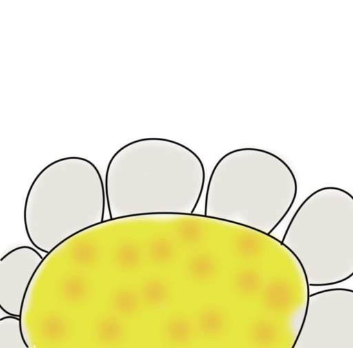

 Бджільництво України: стан, проблеми, шляхи розв’язання-НААН Україну в світі визнають як батьківщину культурного бджільництва, заснованого нашим співвітчизником П.І. Прокоповичем, який створив першу школу пасічників і розробив основи ведення галузі майже 200 років тому. Виробничий фонд галузі налічує близько 400 тис. бджолярів та близько 3 млн бджолосімей. Районовані породи бджіл: карпатська, українська степова, поліська. Виробництво меду в середньому 70 - 80 тис. т. Суб'єкти племінної справи: бджоло -розплідники – 8; племпасіки – 19. Законодавча база: Закон України «Про бджільництво» (№ 1492-ІІІ від 22 лютого 2000 року), підзаконні акти до нього та інші нормативні документи.
Споживання меду: в середньому, один українець за рік споживає близько 0,8-1,2 кг меду (США – 0,76 кг, країни ЄС – 0,65 кг, Китай – 0,25 кг). Відповідно до Постанови КМУ від 22 листопада 2004 р. № 1591 «Про затвердження норм харчування у навчальних та дитячих закладах оздоровлення та відпочинку» норма споживання меду має становити близько 2,5 кг.
Галузь бджільництва України є важливою складовою економіки держави, що визначає обсяги, пропозиції та вартість основних видів продовольства для населення країни. Бджільництво є базою та джерелом сталого розвитку для низки галузей, зокрема, галузі рослинництва, основою функціонування якої є розведення, утримання і використання бджіл для запилення ентомофільних рослин сільськогосподарського призначення та підвищення їх урожайності, фармацевтичної, харчової та інших. На основі вимог Законів України «Про державну підтримку сільського господарства України» та «Про бджільництво» розроблено Програму розвитку галузі бджільництва України на період 2016-2020 рр.. метою якої є досягнення кількості бджолиних сімей у всіх категоріях господарств у 2020 р. до 6,0 млн. та виробництва натурального меду до 120 тис. т., воску до 2,8 тис. т.;
На сьогодні бджільництво має переважно запилювально-медовий напрям. Крім меду в галузі виробляються також додаткові продукти бджільництва – прополіс, квітковий пилок, перга, маточне бджолине молочко, бджолина отрута, які є сировиною для харчової та фармацевтичної галузей.
Зимівля 2018-2019 рр. у більшості областей України пройшла без значних втрат, що дає надію на продуктивний сезон цього року. Разом з цим пасічники занепокоєні проблемами, що пов’язані з отруєннями бджіл саме засобами захисту рослин.
Зокрема, до недавнього часу Україна входила в трійку найбільших експортерів меду (після Китаю, Аргентини). Головний ринок збуту для українського меду – країни Європейського Союзу. Серед основних експортерів Німеччина, Польща, Бельгія. Разом з тим за даними Мінагрополітики у 2018 році експорт меду з України знизився на понад 25% і як наслідок, Україна втратила статус третьої країни - експортера меду в світі – 2017 року експортувала близько 68 тис. т. меду, 2018 року цей показник знизився до 49,4 тис. тонн. Головною причиною цього стало отруєння бджіл засобами захисту рослин, що є однією з основних проблем галузі на даний час. Це стосується, зокрема, порушення технологічних вимог щодо проведення обробок засобами захисту рослин та неповідомлення пасічників про проведення таких обробок відповідно до ст. 37 Закону України «Про бджільництво». Важливою проблемою є також недостатній рівень використання бджіл в якості запилювачів ентомофільних сільсько-господарських рослин і як наслідок зниження кількісних та якісних показників продукції галузі рослинництва й рівня рентабельності галузі бджільництва.
Необхідно зазначити, що на виконання Постанови Президії НААН ННЦ «Інститут бджільництва імені П.І. Прокоповича» розроблено пропозиції про внесення доповнень до Закону України «Про бджільництво» щодо використання запилення бджолами ентомофільних сільськогосподарських рослин як обов’язкового технологічного елементу їх вирощування та до «Кодексу України про адміністративні правопорушення» з питань удосконалення адміністративної відповідальності за порушення законодавства в галузі бджільництва в частині отруєння бджіл засобами захисту рослин та надано до Мінагрополітики в установленому порядку.
Основні проблеми галузі бджільництва України, які потребують негайного розв’язання: – відсутність ефективної державної фінансової підтримки галузі; –низька технологічна культура виробництва продукції, її переробки, та фасування відсутність промислових технологій; –зменшення масштабів посівів ентомофільних сільськогосподарських рослин та недостатнє використання бджолозапилення; – погіршення екологічного стану оточуючого природного середовища та порушення технологічних вимог щодо обробітку ентомофільних сільськогосподарських рослин пестицидами та отрутохімікатами і як наслідок – масові отруєння бджіл; –недостатнє ветеринарне забезпечення, що призводить до неконтрольованого поширення хвороб бджіл; – відсутність гармонізованого масиву законодавства щодо виробництва та якості продукції галузі і як наслідок складнощі в реалізації експортного потенціалу галузі.